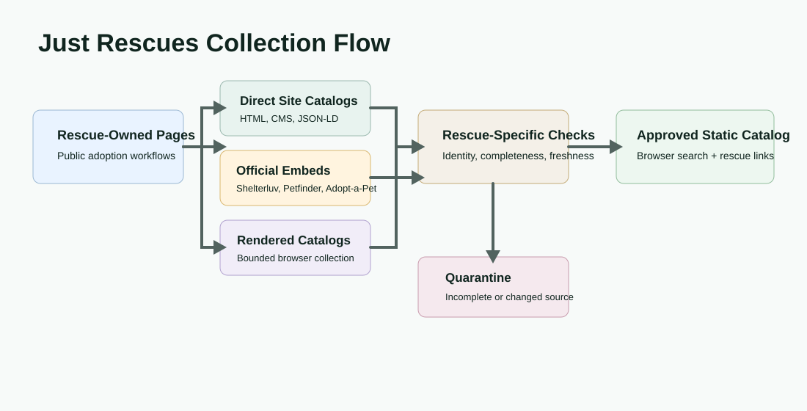
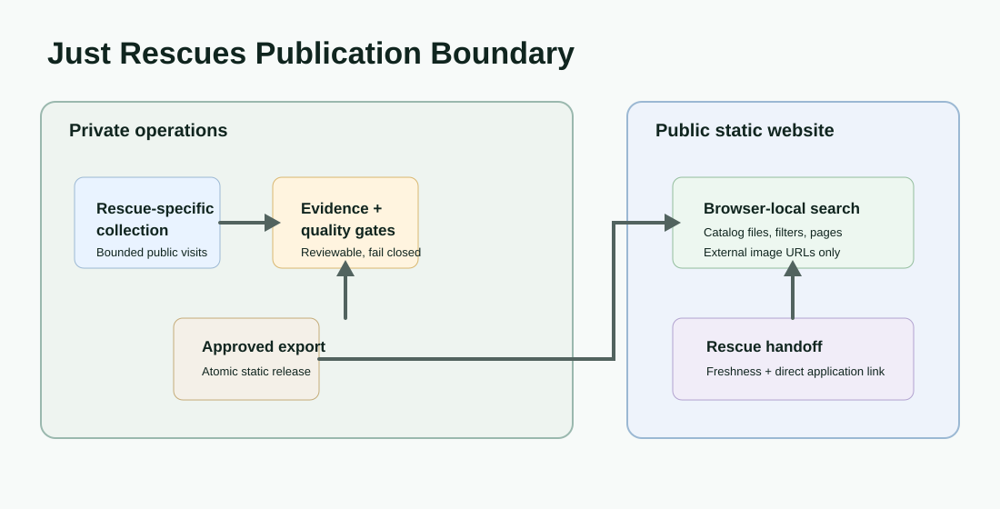

Problem
Families looking to adopt often have to search many rescue websites, each with its own catalog format, filtering behavior, and update cadence. Just Rescues makes that discovery process friendlier without pretending to replace the organization that knows a dog's availability or manages its adoption process.
Solution
Just Rescues publishes a searchable static catalog of adoptable dogs from reviewed rescue organizations. Visitors can explore breed, age, size, and sex, see the rescue and observation context for each listing, and continue to the responsible rescue's own profile or application workflow to confirm availability.
One Pipeline Per Rescue
The system is intentionally not a single generic connector. Every rescue begins at its own public adoption page and has a tailored collection procedure, expected catalog shape, allowed hosts, pagination behavior, identity checks, request budget, fixtures, and quarantine rules.
That means the platform can follow the workflow a rescue already maintains: direct plain HTML and rescue-authored JSON; Squarespace, Webflow, Drupal, WordPress, and Wix catalogs; or official embedded systems such as Shelterluv, Petfinder, Adopt-a-Pet, Petstablished/Wagtopia, 24PetConnect, ShelterBuddy, Adopets, and RescueGroups. A shared vendor parser can help read a particular technical shape, but it never turns that vendor into an independent source of truth.
Collection and Publication Flow

Design Decisions
First-Party Authority
Each pipeline starts with the rescue's public adoption experience. Structured platform data is used only within that rescue-specific boundary.
Fail-Closed Freshness
Failed, incomplete, or structurally changed runs quarantine instead of silently removing dogs or replacing a known-good catalog.
Static Public Delivery
An approved export produces versioned static catalog files searched in the browser, avoiding a public database or always-on catalog API.
Photo and Privacy Boundary
Dog photos remain on their original hosts. The public release contains external HTTPS image references, not copied image bytes or private operating data.
Private Operations, Public Discovery

Reliability in a Human Context
Collection is deliberately bounded and paced, with source-specific completeness checks and offline fixture replay for safe parser development. A missing dog only changes public availability after complete successful observations; a failed run does not make a rescue's dogs disappear. The result is a useful discovery tool that stays clear about what it knows and sends people back to the rescue for the final answer.
Live Daily Operation
Since November 23, 2026, a dedicated Linux host collects every day at midnight and publishes a site release at noon (Eastern) under systemd timers. The dispatcher paces sources through the day and resumes the same batch after a restart. It retries a transient failure once after a 30-minute cool-down, but never retries rate limits, access denials, connector drift, or quarantines. It also closes runs left open by a collector that died.
The release published on November 25, 2026 lists 40 rescues, 1,508 visible dogs, and 4,322 dog detail pages. The collection codebase passes 468 tests across 34 test modules.